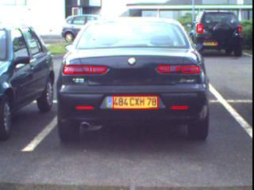
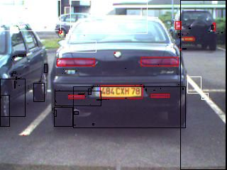
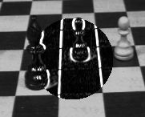

Go to SourceForge Project Page
Find the red and yellow blobs in a picture using RGB->YUV color space conversion, thresholding of the V plane (yellow and red), and labelling of the resulting threshold images. Here is the output image :

Find the red, white and yellow blobs at once in a picture, using color clustering and labelling of the resulting clustered image. You will see how easy it is to define color clusters. Here is the output image :

The idea here is to create a mask image (a disk), and apply a sobel filter only on the pixels included in the mask. Note that border handling is perfect.
